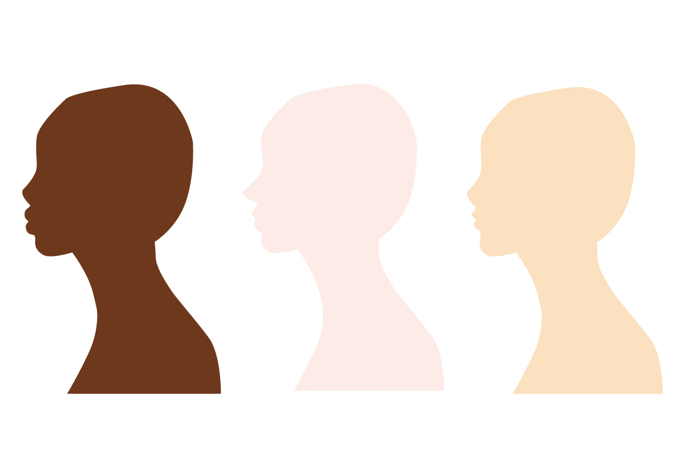

制作期間
3週間
使用ソフト・技術
Illustrator/After Effects/Garage Band
制作過程
01.ポスター制作
Illustratorで人の横顔や木をトレースしポスターの配色や文字を考えました。
02.アニメーションを作る
After EffectsでIllustratorのパスを動かしていきます。 一定のリズムで木が大きくなっていくように工夫をしました。
03.BGMを作る
ipadのGarage Bandを使ってドラムやキーボードを打ち込んでいきます。 自分のイメージと合うように何度も繰り返し弾きました。 文字が出るタイミングでリズムの「パンッ」が鳴ようにしたり、全体が表示されるところで 少し曲の雰囲気を変えてメリハリを持たせたりしました。 最後はフェードアウトに合わせて音数を少なくし、余韻をつけています。
まとめ
最初はフリー素材のBGMを使用する予定でしたが、一から自分で作りたいと思い挑戦しました。 アニメーションと音楽を作ることができてよかったと思います。